Last updated: 2026-04-06
Checks: 5 2
Knit directory: PIPAC_spatial/
This reproducible R Markdown analysis was created with workflowr (version 1.7.1). The Checks tab describes the reproducibility checks that were applied when the results were created. The Past versions tab lists the development history.
The R Markdown file has unstaged changes. To know which version of
the R Markdown file created these results, you’ll want to first commit
it to the Git repo. If you’re still working on the analysis, you can
ignore this warning. When you’re finished, you can run
wflow_publish to commit the R Markdown file and build the
HTML.
Great job! The global environment was empty. Objects defined in the global environment can affect the analysis in your R Markdown file in unknown ways. For reproduciblity it’s best to always run the code in an empty environment.
The command set.seed(20240917) was run prior to running
the code in the R Markdown file. Setting a seed ensures that any results
that rely on randomness, e.g. subsampling or permutations, are
reproducible.
Great job! Recording the operating system, R version, and package versions is critical for reproducibility.
Nice! There were no cached chunks for this analysis, so you can be confident that you successfully produced the results during this run.
Using absolute paths to the files within your workflowr project makes it difficult for you and others to run your code on a different machine. Change the absolute path(s) below to the suggested relative path(s) to make your code more reproducible.
| absolute | relative |
|---|---|
| /home/hnatri/PIPAC_spatial/ | . |
| /home/hnatri/PIPAC_spatial/code/PIPAC_colors_themes.R | code/PIPAC_colors_themes.R |
| /home/hnatri/PIPAC_spatial/code/plot_functions.R | code/plot_functions.R |
| /home/hnatri/PIPAC_spatial/CT26_CAF_celltypeprops.pdf | CT26_CAF_celltypeprops.pdf |
| /home/hnatri/PIPAC_spatial/CT26_CAF_pathways.pdf | CT26_CAF_pathways.pdf |
| /home/hnatri/PIPAC_spatial/CT26_CAF_UMAP.pdf | CT26_CAF_UMAP.pdf |
| /home/hnatri/PIPAC_spatial/CT26_CAF_UMAP_sample.pdf | CT26_CAF_UMAP_sample.pdf |
Great! You are using Git for version control. Tracking code development and connecting the code version to the results is critical for reproducibility.
The results in this page were generated with repository version 1ad97ad. See the Past versions tab to see a history of the changes made to the R Markdown and HTML files.
Note that you need to be careful to ensure that all relevant files for
the analysis have been committed to Git prior to generating the results
(you can use wflow_publish or
wflow_git_commit). workflowr only checks the R Markdown
file, but you know if there are other scripts or data files that it
depends on. Below is the status of the Git repository when the results
were generated:
Ignored files:
Ignored: PDX_CAF_cluster_markers.tsv
Ignored: PDX_CAF_nonimmune_cluster_markers.tsv
Ignored: analysis/figure/
Ignored: cell_annotation_final_topmarkers.tsv
Ignored: cell_immune_cluster_marker_annotations.tsv
Ignored: cell_nonimmune_cluster_marker_annotations.tsv
Ignored: celltype_markers.tsv
Ignored: code/.RData
Ignored: code/.Rapp.history
Ignored: code/.Rhistory
Ignored: code/PDX_CAF_scRNAseq_inferCNA.Rout
Ignored: code/Proximity_analysis/.DS_Store
Ignored: code/Proximity_analysis/data/
Ignored: code/Proximity_analysis/output/
Ignored: code/RSC_latest_EDM_2025-08-06/
Ignored: code/scGSEA_CAFs.Rout
Ignored: immune_cluster_marker_annotations_2ndpass.tsv
Ignored: immune_prelim_annot_topmarkers.tsv
Ignored: nonimmune_cluster_marker_annotations_2ndpass.tsv
Ignored: nonimmune_prelim_annot_topmarkers.tsv
Ignored: output/proximity_compiled.tsv
Ignored: output/tumor_proximity_compiled.tsv
Ignored: tumor_posttreatment_proximity_compiled.tsv
Ignored: tumor_pretreatment_proximity_compiled.tsv
Ignored: tumor_proximity_compiled.tsv
Untracked files:
Untracked: analysis/PDX_CAF_subclustering.Rmd
Untracked: code/PDX_CAF_scRNAseq_inferCNA.R
Untracked: code/arm2_sample_summary.R
Untracked: code/poster_plots.R
Untracked: code/slurm.31914145.err
Untracked: code/slurm.31914145.out
Untracked: code/slurm.31914197.err
Untracked: code/slurm.31914197.out
Untracked: code/slurm.31914223.err
Untracked: code/slurm.31914223.out
Untracked: code/slurm.31930759.err
Untracked: code/slurm.31930759.out
Untracked: code/slurm.31954236.err
Untracked: code/slurm.31954236.out
Untracked: output/CT26_CNAmtx.RData
Untracked: output/CT26_Clonal_CN.seg
Untracked: output/CT26_coarse-grainedClonalCNProfile.png
Untracked: output/CT26heatmap.png
Untracked: output/CT26onlytumorheatmap.png
Untracked: output/CT26onlytumorvega_output
Untracked: output/CT26vega_output
Unstaged changes:
Modified: analysis/PDX_CAF_scRNAseq_CMS.Rmd
Modified: analysis/PDX_CAF_scRNAseq_analysis.Rmd
Modified: analysis/PDX_CAF_scRNAseq_comparative_analysis.Rmd
Modified: analysis/arm3_comparative_analysis.Rmd
Modified: analysis/immune_analysis.Rmd
Modified: analysis/pretty_plots.Rmd
Modified: code/run_rscript.sh
Modified: ncells.tsv
Note that any generated files, e.g. HTML, png, CSS, etc., are not included in this status report because it is ok for generated content to have uncommitted changes.
These are the previous versions of the repository in which changes were
made to the R Markdown
(analysis/PDX_CAF_scRNAseq_comparative_analysis.Rmd) and
HTML (docs/PDX_CAF_scRNAseq_comparative_analysis.html)
files. If you’ve configured a remote Git repository (see
?wflow_git_remote), click on the hyperlinks in the table
below to view the files as they were in that past version.
| File | Version | Author | Date | Message |
|---|---|---|---|---|
| Rmd | 1ad97ad | heinin | 2026-03-31 | Co-injection scRNAseq subclustering, updated comparative analysis, added Xenim immune subset analysis |
| html | 1ad97ad | heinin | 2026-03-31 | Co-injection scRNAseq subclustering, updated comparative analysis, added Xenim immune subset analysis |
| html | 5f94dd0 | heinin | 2026-03-21 | Updated to fix annotations and file path |
| Rmd | fe04c13 | heinin | 2026-03-21 | Updated comparative analysis |
| html | fe04c13 | heinin | 2026-03-21 | Updated comparative analysis |
| Rmd | f9fe197 | heinin | 2026-03-21 | Updated annotations with MT-filtered data |
| html | f9fe197 | heinin | 2026-03-21 | Updated annotations with MT-filtered data |
library(workflowr)
library(Seurat)
library(googlesheets4)
library(tidyverse)
library(plyr)
library(SoupX)
library(scProportionTest)
library(clusterProfiler)
library(org.Hs.eg.db)
library(org.Mm.eg.db)
library(biomaRt)
library(gprofiler2)
setwd("/home/hnatri/PIPAC_spatial/")
set.seed(1234)
options(future.globals.maxSize = 30000 * 1024^2)
reduction <- "umap"
source("/home/hnatri/SingleCellBestPractices/scripts/preprocessing_qc_module.R")
source("/home/hnatri/SingleCellBestPractices/scripts/integration_module.R")
source("/home/hnatri/Utilities/utilities.R")
source("/home/hnatri/PIPAC_spatial/code/PIPAC_colors_themes.R")
source("/home/hnatri/PIPAC_spatial/code/plot_functions.R")
# Markers
main_plot_features <- c("PTPRC", "CD3D", "CD3E", "CD4", "CD8A", "JAK1", "JAK2", "STAT4", "STAT3", "TIGIT", "GZMB", "SELL", "CD19", "CD68", "CD44", "MARCO", "APOE", "C1QB", "C1QBP", "CD163", "SPP1", "VCAN", "MUC5AC", "NOTCH3", "RGS5", "MS4A1", "PGA5", "PLVAP", "CCL21", "LYVE", "SPARCL1", "FN1", "DCN", "LUM", "COL1A2", "PDPN", "ACTA2", "LMNA", "EGR3", "TP53", "JUN", "FOS", "BRAF", "KIT", "SOX9", "RNF43", "EPCAM", "PECAM", "CEACAM", "TGFB1", "JUNB", "TCF7", "GZMA", "GZMK", "CD47", "CD74", "LYZ", "TREM2", "CD247", "COL5A1", "SPARC", "CD36", "CTLA4", "RGS1", "CCL2", "SELENOP", "LYVE1", "CTSD", "MMP9", "CDK1", "FLT1", "RAMP2", "CCL14", "MCAM", "NRP1", "CEACAM6", "IL32", "TGFBI", "VEGFA", "LAMP1", "IGFBP7", "POSTN", "C1S", "C1R", "CSF1", "NOTCH1", "FOXP3", "IL2RB", "TUBA1B", "S100A9", "C3", "CXCR2", "SDC1", "CD38", "IGHG1", "PRDX4", "ICAM1", "GATA2", "CXCL3", "JCHAIN")
mycafs <- c("TGFB1", "ACTA2", "TAGLN") #"HOPX", "MYL9"
icafs <- c("IL6", "CXCL12", "CXCL14") #"CXCL13",
apcafs <- c("CD74", "HLA-DPB1", "HLA-DPB2", "HLA-DQA1", "HLA-DRA", "HLA-DRB1")
ficafs <- c("SFRP2", "SFRP4", "COMP", "CXCL14", "PLA2G2A", "ASPN")
# F-apCAFs (C1QC, APOC1, RARRES1) and M-apCAFs (CD24, CA9, EGLN3)
more_apcafs <- c("C1QC", "APOC1", "RARRES1", "CD24", "CA9", "EGLN3")
# Matrix CAFs
mcafs <- c("FBLN1", "PDGFRA", "POSTN")
# Vascular CAFs
vcafs <- c("KCNJ8", "RGS5", "MCAM", "CD146", "NOTCH3", "NID2", "DES", "PDGFRB", "ACTA2")
main_plot_features <- c(main_plot_features, mycafs, icafs, apcafs, more_apcafs, ficafs, mcafs, vcafs)
main_plot_features <- unique(main_plot_features)
main_plot_features <- gorth(main_plot_features, source_organism = "hsapiens", target_organism = "mmusculus")$ortholog_name
caf_markers <- c("Ly6c", "Il6", "Ccl2", "Cxcl1", "Cxcl2", "Cxcl12",
"Pdgfra", "Agtr1", "Cfd", "Il1a", "Il1b", "Ccl8",
"Ccl27", "Acta2", "Myl9", "Tagln", "Tpm2", "Col1a1",
"Col1a2", "Col3a1")
caf_markers <- unique(caf_markers)
more_caf_markers <- c(mycafs, icafs, apcafs, more_apcafs, ficafs, mcafs, vcafs)
more_caf_markers <- unique(more_caf_markers)
more_caf_markers <- gorth(more_caf_markers, source_organism = "hsapiens", target_organism = "mmusculus")$ortholog_name
caf_markers <- unique(c(caf_markers, more_caf_markers))
mdsc <- c("Cd11b", "Gr-1", "Ly6G", "Ly6C", "Cd244", "Arg2", "Stat3", "Jaml",
"Ccr2", "Arg1", "Csf1r", "Nos2", "S100a8", "S100a9", "Ros")
m2 <- c("Arg1", "Mrc1", "Cd206", "Chil3", "Ym1", "Retnla", "Fizz1",
"Cd163", "Igf1", "Pparg", "Irf4", "Stat6", "Ccl17", "Ccl22", "Il10",
"Tgfb1", "Egr2", "Fpr2")
m1 <- c("Nos2", "Il1b", "Il6", "Tnfa", "Il12a", "Il12b", "Il23", "Ccl5",
"Cxcl2", "Cxcl10", "Cd80", "Cd38", "Cd68", "Cd64", "Fcgr1", "H2-Aa",
"Cd11c", "Fpr2", "Gpr18")
mouse_immune <- c("Ptprc", "Cd3e", "Cd3g", "Cd247", "Cd4", "Cd8a", "Cd8b1",
"Foxp3", "Cd25", "Il2ra", "Ctla4", "Cd19", "Ms4a1", "Cd79a",
"Ncr1", "NKp46", "Klrb1c", "Cd226",
"Adgre1", "Cd68", "Cd11b", "Itgam",
"Nos2", "Cd80", "Cd86",
"Cd163", "Mrc1", "Arg1", "Itgax", "Cd11c",
"Siglech", "Bst2", "Ly6g", "Ly6c", "S100a8",
"Ly6c", "Cd34", "Kit", "Sell", "Ccr7", "Cd44",
"Pdcd1")
emt_markers <- c("Cdh1", "Epcam", "Vim", "Fn1", "Cdh2", "Itga5",
"Snai1", "Snai2", "Twist1", "Zeb1", "Zeb2", "Mmp2",
"Mmp9", "Col1a1")
all_plot_features <- unique(c(main_plot_features, caf_markers, mdsc, m2, m1,
mouse_immune, emt_markers))
main_plot_features <- gorth(all_plot_features, source_organism = "hsapiens", target_organism = "mmusculus")$ortholog_nameseurat_data <- readRDS("/tgen_labs/banovich/PIPAC/CAF_scRNAseq/PDX_CAF_Seurat_fulldata_annotated.rds")
immune <- readRDS("/tgen_labs/banovich/PIPAC/CAF_scRNAseq/PDX_CAF_Seurat_immune_annotated_reUMAP.rds")
nonimmune <- readRDS("/tgen_labs/banovich/PIPAC/CAF_scRNAseq/PDX_CAF_Seurat_nonimmune_annotated_reUMAP.rds")
DefaultAssay(seurat_data) <- "RNA"
DefaultAssay(immune) <- "RNA"
DefaultAssay(nonimmune) <- "RNA"
seurat_data <- JoinLayers(seurat_data)
immune <- JoinLayers(immune)
nonimmune <- JoinLayers(nonimmune)
seurat_data$Annotation <- seurat_data$Final_Celltype
immune$Annotation <- immune$Final_Celltype
nonimmune$Annotation <- nonimmune$Final_Celltype
table(seurat_data$Annotation)
Ambiguous CAF1 CAF2_fiCAF CAF3
426 4751 2212 476
CAF4 CAF5 CAF6 CAF7
2201 2200 241 207
CAF8_fiCAF Lymph1_Tc_Tex Lymph2_NK Lymph3_Tc
864 1328 867 651
Lymph4_B Lymph5_Tc Lymph6_Tc_Tex Lymph7_NK
483 466 170 120
Lymph8_Plasma Lymph9_Treg Myel1_MDSC_M2 Myel2_MDSC_M2
82 172 1260 996
Myel3_MDSC_M2 Myel4_pDC Tumor1 Tumor2_CellCycle
869 183 5049 4820
Tumor3 Tumor4 Tumor5 Tumor6_CellCycle
1381 3383 2915 3062
Tumor7 Tumor8 Tumor9
1119 376 444 table(seurat_data$Sample)
CT26 CT26_CAF
19095 24679 table(seurat_data$Sample, seurat_data$Annotation)
Ambiguous CAF1 CAF2_fiCAF CAF3 CAF4 CAF5 CAF6 CAF7 CAF8_fiCAF
CT26 175 1310 569 180 590 775 124 93 276
CT26_CAF 251 3441 1643 296 1611 1425 117 114 588
Lymph1_Tc_Tex Lymph2_NK Lymph3_Tc Lymph4_B Lymph5_Tc Lymph6_Tc_Tex
CT26 870 677 398 276 267 159
CT26_CAF 458 190 253 207 199 11
Lymph7_NK Lymph8_Plasma Lymph9_Treg Myel1_MDSC_M2 Myel2_MDSC_M2
CT26 67 56 101 982 642
CT26_CAF 53 26 71 278 354
Myel3_MDSC_M2 Myel4_pDC Tumor1 Tumor2_CellCycle Tumor3 Tumor4 Tumor5
CT26 565 165 2032 2955 282 1291 1090
CT26_CAF 304 18 3017 1865 1099 2092 1825
Tumor6_CellCycle Tumor7 Tumor8 Tumor9
CT26 1570 447 65 46
CT26_CAF 1492 672 311 398cts <- as.factor(sort(unique(as.character(seurat_data$Annotation))))
ct_col <- colorRampPalette(brewer.pal(10, "Paired"))(nb.cols <- length(cts))
names(ct_col) <- levels(cts)
create_barplot(seurat_data,
group_var = "Sample",
plot_var = "Annotation",
plot_levels = sort(unique(as.character(seurat_data$Annotation))),
group_levels = sort(unique(seurat_data$Sample)),
plot_colors = ct_col,
var_names = c("Frequency (%)", ""),
legend_title = "Celltype")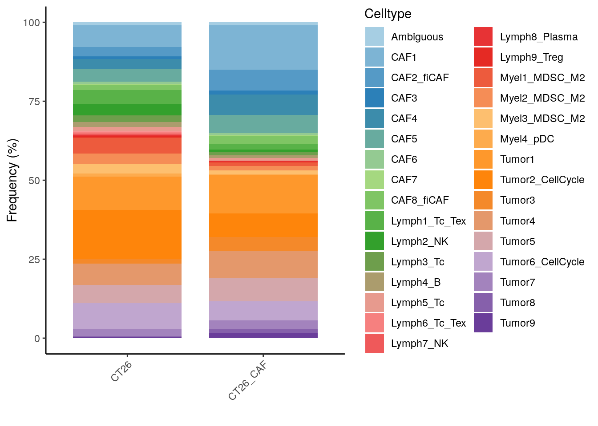
| Version | Author | Date |
|---|---|---|
| 1ad97ad | heinin | 2026-03-31 |
prop_test <- sc_utils(seurat_data)
prop_test <- permutation_test(
prop_test, cluster_identity = "Annotation",
sample_1 = "CT26", sample_2 = "CT26_CAF",
sample_identity = "Sample")
permutation_plot(prop_test) +
ggtitle("CT26 vs. CT26+CAF")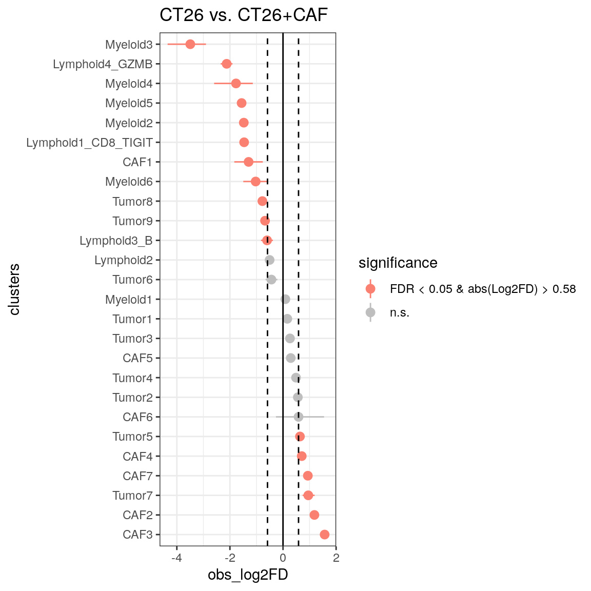
| Version | Author | Date |
|---|---|---|
| 1ad97ad | heinin | 2026-03-31 |
#filename <- "/home/hnatri/PIPAC_spatial/CT26_CAF_celltypeprops.pdf"
#
#pdf(file=filename,
# width = 5.5,
# height = 6)
#
#permutation_plot(prop_test) +
# ggtitle("CT26 vs. CT26+CAF")
#
#dev.off()#tumor_DEGs <- get_DEGs(seuratdata = seurat_data,
# celltypes = unique(seurat_data$harmony_snn_res.0.8),
# groupvar = "PrePost",
# group1 = "Treated",
# group2 = "Baseline")
#tumor_only <- subset(seurat_data, subset = harmony_snn_res.0.8 %in% c(0, 2, 4, 7, 18, 21,
# 16, 5, 9, 8, 14, 15, 3,
# 19, 1, 6))
#tumor_only <- c("CAF1", "CAF2", "CAF3", "CAF4", "CAF5", "CAF6", "CAF7",
# "Proliferating1", "Proliferating2", "Proliferating3",
# "Tumor1", "Tumor2", "Tumor3", "Tumor4", "Tumor5")
caf_only <- unique(grep("CAF", seurat_data$Annotation, value = T))
caf_only <- subset(seurat_data, subset = Annotation %in% caf_only)
DefaultAssay(caf_only) <- "RNA"
caf_only <- JoinLayers(caf_only)
caf_only <- NormalizeData(caf_only)
Idents(caf_only) <- caf_only$Sample
caf_DEGs <- FindMarkers(caf_only,
ident.1 = "CT26_CAF",
ident.2 = "CT26")
# Distribution of p-values and log2FC
hist(caf_DEGs$p_val)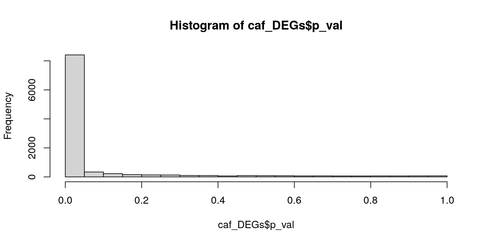
| Version | Author | Date |
|---|---|---|
| 1ad97ad | heinin | 2026-03-31 |
hist(caf_DEGs$p_val_adj)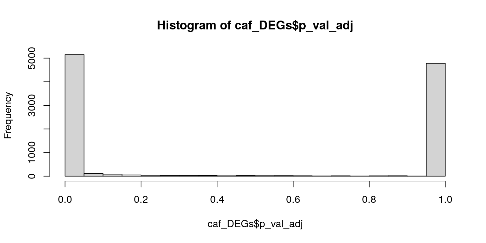
| Version | Author | Date |
|---|---|---|
| 1ad97ad | heinin | 2026-03-31 |
hist(caf_DEGs$avg_log2FC)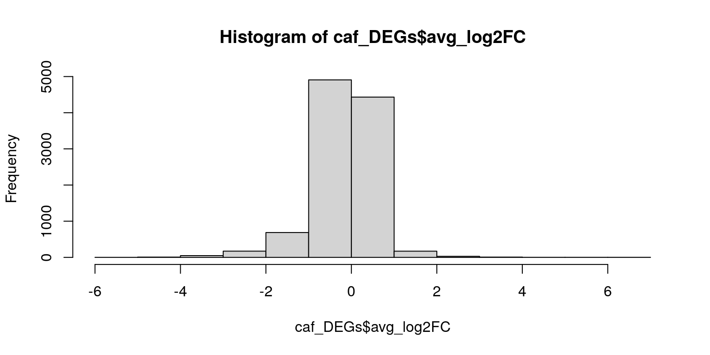
| Version | Author | Date |
|---|---|---|
| 1ad97ad | heinin | 2026-03-31 |
ensembl <- useMart("ensembl", dataset="mmusculus_gene_ensembl")
geneinfo <- getBM(attributes=c("mgi_symbol", "ensembl_gene_id"),
filters = 'mgi_symbol',
values = rownames(caf_DEGs),
mart = ensembl)
caf_DEGs$gene_id <- mapvalues(rownames(caf_DEGs),
from = geneinfo$mgi_symbol,
to = geneinfo$ensembl_gene_id)
caf_DEGs_sig <- caf_DEGs %>%
filter(p_val_adj < 0.01,
abs(avg_log2FC) > 1,
(pct.1 > 0.2 | pct.2 > 0.2))
caf_DEGs_sig %>%
filter(avg_log2FC>0) %>% rownames() %>% length()[1] 71caf_DEGs_sig %>%
filter(avg_log2FC<0) %>% rownames() %>% length()[1] 80caf_DEGs_sig %>%
filter(avg_log2FC>0) %>%
arrange(desc(avg_log2FC)) %>%
head(20) p_val avg_log2FC pct.1 pct.2 p_val_adj gene_id
Tsc22d3 0.000000e+00 3.616021 0.674 0.178 0.000000e+00 ENSMUSG00000031431
Mertk 3.140527e-155 3.423219 0.226 0.039 1.058232e-150 ENSMUSG00000014361
Fkbp5 0.000000e+00 3.207850 0.942 0.523 0.000000e+00 ENSMUSG00000024222
Ddit4 6.900522e-144 3.011857 0.233 0.051 2.325200e-139 ENSMUSG00000020108
Ccn2 5.952079e-199 2.779032 0.340 0.098 2.005612e-194 ENSMUSG00000019997
Ampd3 1.268021e-201 2.643261 0.353 0.108 4.272724e-197 ENSMUSG00000005686
Cebpd 0.000000e+00 2.609565 0.572 0.233 0.000000e+00 ENSMUSG00000071637
Clca3a1 0.000000e+00 2.603161 0.712 0.399 0.000000e+00 ENSMUSG00000056025
Mt2 0.000000e+00 2.546513 0.960 0.603 0.000000e+00 ENSMUSG00000031762
Spsb1 5.479328e-141 2.527468 0.278 0.088 1.846314e-136 ENSMUSG00000039911
Mt1 0.000000e+00 2.444006 0.968 0.625 0.000000e+00 ENSMUSG00000031765
Cblb 0.000000e+00 2.405603 0.728 0.341 0.000000e+00 ENSMUSG00000022637
Ccnd3 0.000000e+00 2.251160 0.746 0.369 0.000000e+00 ENSMUSG00000034165
Sorbs1 0.000000e+00 2.245726 0.780 0.441 0.000000e+00 ENSMUSG00000025006
Bcl2l1 0.000000e+00 2.015039 0.630 0.347 0.000000e+00 ENSMUSG00000007659
Krt20 4.594522e-136 1.990531 0.369 0.177 1.548170e-131 ENSMUSG00000035775
Slc22a23 6.288817e-88 1.962176 0.265 0.120 2.119080e-83 ENSMUSG00000038267
Lgalsl 5.434806e-75 1.829048 0.254 0.126 1.831312e-70 ENSMUSG00000042363
Stk38 1.150813e-298 1.808913 0.639 0.401 3.877780e-294 ENSMUSG00000024006
F3 4.388084e-62 1.790660 0.213 0.100 1.478609e-57 ENSMUSG00000028128upreg <- caf_DEGs_sig %>%
filter(avg_log2FC>0) %>%
arrange(desc(avg_log2FC)) %>%
rownames()
VlnPlot(caf_only,
group.by = "Sample",
features = head(upreg, n = 12),
pt.size = 0,
ncol = 4) &
theme_bw() &
NoLegend() &
RotatedAxis() &
xlab("")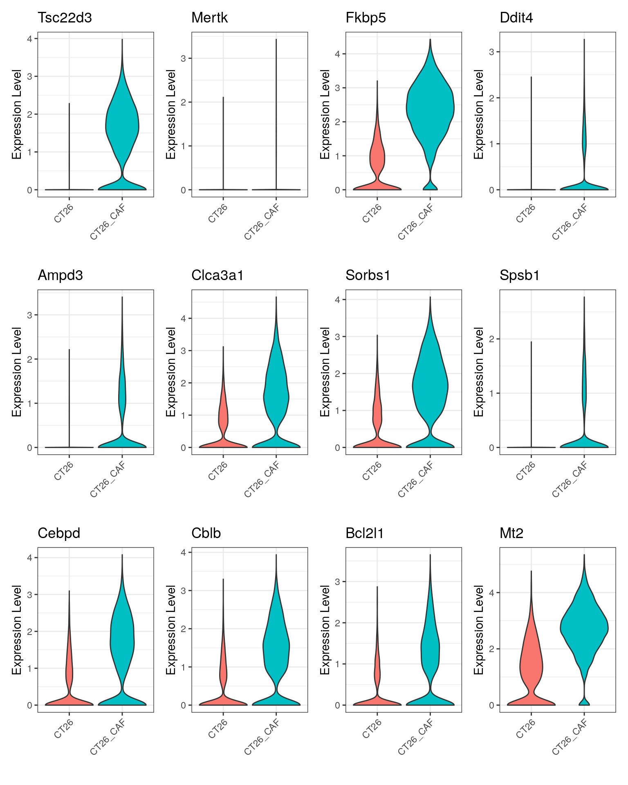
| Version | Author | Date |
|---|---|---|
| 1ad97ad | heinin | 2026-03-31 |
caf_DEGs_sig %>%
filter(avg_log2FC<0) %>%
arrange(desc(avg_log2FC)) %>%
tail(20) p_val avg_log2FC pct.1 pct.2 p_val_adj gene_id
Noct 5.069481e-187 -1.312347 0.176 0.423 1.708212e-182 ENSMUSG00000023087
Smad7 1.861428e-223 -1.319164 0.156 0.426 6.272268e-219 ENSMUSG00000025880
Slc22a4 9.846036e-123 -1.365803 0.098 0.259 3.317720e-118 ENSMUSG00000020334
Gbp4 5.960150e-172 -1.368407 0.128 0.345 2.008332e-167 ENSMUSG00000079363
Cmss1 0.000000e+00 -1.382154 0.929 0.999 0.000000e+00 ENSMUSG00000022748
Slc5a3 2.339319e-204 -1.383405 0.142 0.390 7.882569e-200 ENSMUSG00000089774
Cd44 0.000000e+00 -1.412532 0.596 0.893 0.000000e+00 ENSMUSG00000005087
Gja1 8.986540e-231 -1.452310 0.167 0.439 3.028104e-226 ENSMUSG00000050953
Sgms2 1.686144e-306 -1.469514 0.285 0.632 5.681632e-302 ENSMUSG00000050931
Dkk2 6.989287e-175 -1.514842 0.137 0.355 2.355110e-170 ENSMUSG00000028031
Gvin2 1.019202e-134 -1.517350 0.058 0.203 3.434304e-130 ENSMUSG00000078606
Gbp6 1.442780e-135 -1.522630 0.088 0.255 4.861593e-131 ENSMUSG00000104713
Gm19951 4.951743e-203 -1.576434 0.086 0.299 1.668539e-198 ENSMUSG00000113136
Camk1d 0.000000e+00 -1.628401 0.475 0.900 0.000000e+00 ENSMUSG00000039145
Slit2 0.000000e+00 -1.646742 0.894 0.994 0.000000e+00 ENSMUSG00000031558
Sell 1.107819e-226 -1.648761 0.114 0.355 3.732905e-222 ENSMUSG00000026581
Ern1 0.000000e+00 -1.658580 0.414 0.801 0.000000e+00 ENSMUSG00000020715
Lars2 0.000000e+00 -1.755044 0.476 0.889 0.000000e+00 ENSMUSG00000035202
Mtcl1 8.410212e-182 -1.767857 0.068 0.251 2.833905e-177 ENSMUSG00000052105
Gpr39 0.000000e+00 -2.487849 0.067 0.331 0.000000e+00 ENSMUSG00000026343downreg <- caf_DEGs_sig %>%
filter(avg_log2FC<0) %>%
arrange(desc(avg_log2FC)) %>%
rownames()
VlnPlot(caf_only,
group.by = "Sample",
features = tail(downreg, n = 12),
pt.size = 0,
ncol = 4) &
theme_bw() &
NoLegend() &
RotatedAxis() &
xlab("")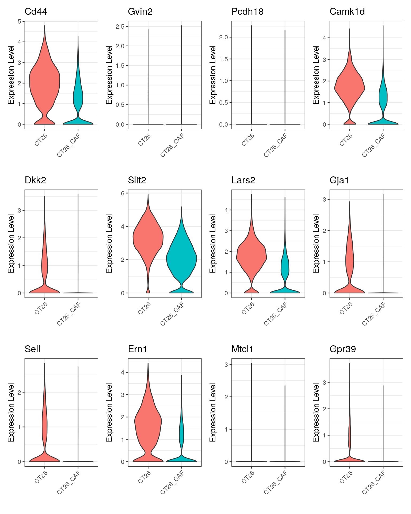
| Version | Author | Date |
|---|---|---|
| 1ad97ad | heinin | 2026-03-31 |
caf_DEGs_up <- caf_DEGs_sig %>%
filter(avg_log2FC>0)
gse_res <- enrichGO(rownames(caf_DEGs_up),
ont ="BP",
keyType = "SYMBOL",
OrgDb = org.Mm.eg.db,
minGSSize = 3,
maxGSSize = 1000,
pvalueCutoff = 0.01,
qvalueCutoff = 1,
universe = rownames(caf_DEGs),
pAdjustMethod = "none")
ddp <- dotplot(gse_res, showCategory=10, font.size=10, color="pvalue") +
theme(legend.text=element_text(size=5),
legend.position = "top",
legend.box = "vertical",
text = element_text(size=6))
dim(gse_res)[1] 90 9ddp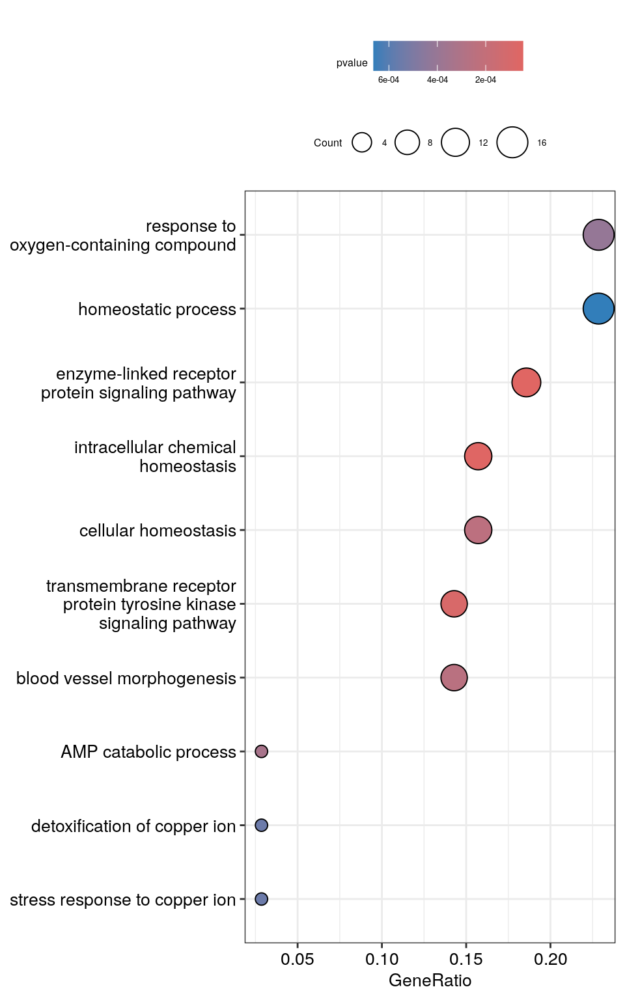
| Version | Author | Date |
|---|---|---|
| 1ad97ad | heinin | 2026-03-31 |
#filename <- "/home/hnatri/PIPAC_spatial/CT26_CAF_pathways.pdf"
#
#pdf(file=filename,
# width = 4.5,
# height = 6)
#
#ddp
#
#dev.off()caf_DEGs_down <- caf_DEGs_sig %>%
filter(avg_log2FC<0)
gse_res <- enrichGO(rownames(caf_DEGs_down),
ont ="BP",
keyType = "SYMBOL",
OrgDb = org.Mm.eg.db,
minGSSize = 3,
maxGSSize = 1000,
pvalueCutoff = 0.01,
qvalueCutoff = 1,
universe = rownames(caf_DEGs),
pAdjustMethod = "none")
ddp <- dotplot(gse_res, showCategory=10, font.size=10, color="pvalue") +
theme(legend.text=element_text(size=5),
legend.position = "top",
legend.box = "vertical",
text = element_text(size=6))
dim(gse_res)[1] 280 9ddp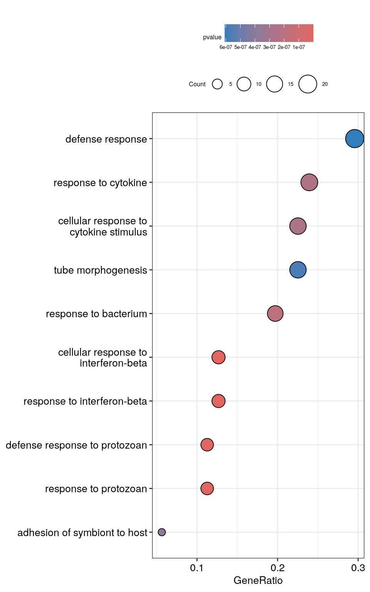
| Version | Author | Date |
|---|---|---|
| 1ad97ad | heinin | 2026-03-31 |
#filename <- "/home/hnatri/PIPAC_spatial/CT26_CAF_pathways.pdf"
#
#pdf(file=filename,
# width = 4.5,
# height = 6)
#
#ddp
#
#dev.off()filename <- "/home/hnatri/PIPAC_spatial/CT26_CAF_UMAP.pdf"
pdf(file=filename,
width = 8,
height = 5)
DimPlot(seurat_data,
group.by = "Annotation",
reduction = "harmony_umap",
cols = ct_col,
label = T,
label.box = T,
repel = T) +
coord_fixed(ratio = 1) +
theme_bw()
dev.off()
filename <- "/home/hnatri/PIPAC_spatial/CT26_CAF_UMAP_sample.pdf"
pdf(file=filename,
width = 9,
height = 4)
DimPlot(seurat_data,
group.by = "Annotation",
split.by = "Sample",
reduction = "harmony_umap",
cols = ct_col,
label = F) +
coord_fixed(ratio = 1) +
theme_bw() +
NoLegend()
dev.off()myel_cts <- unique(grep("Myel", seurat_data$Annotation, value = T))
myel_only <- subset(seurat_data, subset = Annotation %in% myel_cts)
m1 <- c("Nos2", "Il1b", "Il6", "Tnfa", "Il12a", "Il12b", "Il23", "Ccl5",
"Cxcl2", "Cxcl10", "Cd80", "Cd38", "Cd68", "Cd64", "Fcgr1", "H2-Aa",
"Cd11c", "Fpr2", "Gpr18")
VlnPlot(myel_only,
group.by = "Sample",
features = m1,
pt.size = 0,
ncol = 4) &
theme_bw() &
NoLegend() &
RotatedAxis() &
xlab("")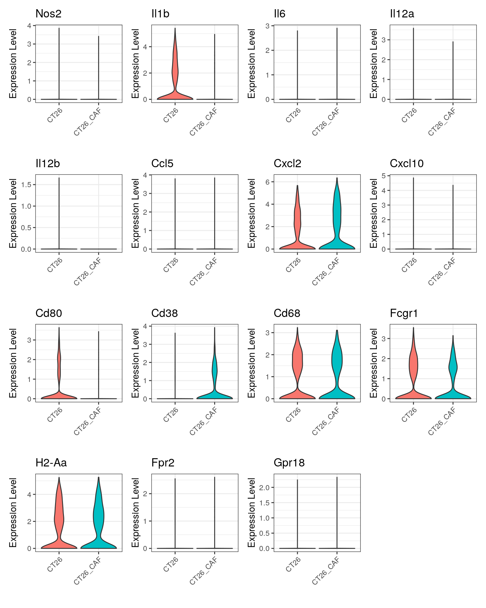
| Version | Author | Date |
|---|---|---|
| 1ad97ad | heinin | 2026-03-31 |
m2 <- c("Arg1", "Mrc1", "Cd206", "Chil3", "Ym1", "Retnla", "Fizz1",
"Cd163", "Igf1", "Pparg", "Irf4", "Stat6", "Ccl17", "Ccl22", "Il10",
"Tgfb1", "Egr2", "Fpr2")
VlnPlot(myel_only,
group.by = "Sample",
features = m2,
pt.size = 0,
ncol = 4) &
theme_bw() &
NoLegend() &
RotatedAxis() &
xlab("")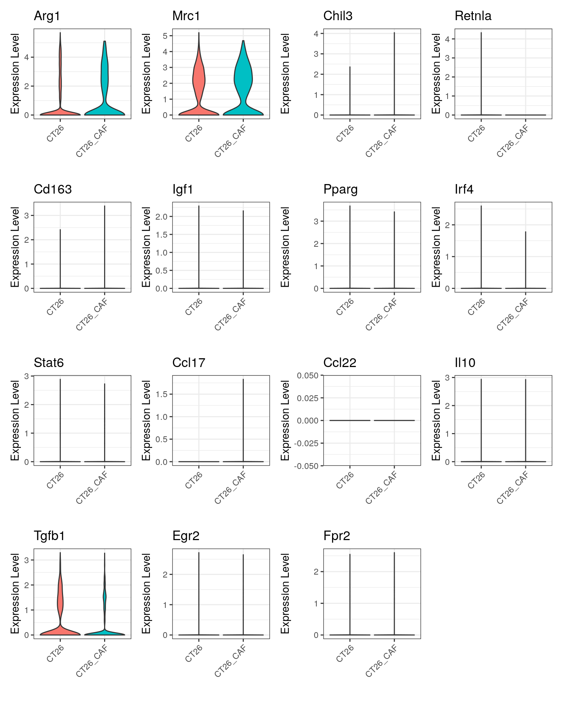
| Version | Author | Date |
|---|---|---|
| 1ad97ad | heinin | 2026-03-31 |
mdsc <- c("Cd11b", "Gr-1", "Ly6G", "Ly6C", "Cd244", "Arg2", "Stat3", "Jaml",
"Ccr2", "Arg1", "Csf1r", "Nos2", "S100a8", "S100a9", "Ros")
VlnPlot(myel_only,
group.by = "Sample",
features = mdsc,
pt.size = 0,
ncol = 4) &
theme_bw() &
NoLegend() &
RotatedAxis() &
xlab("")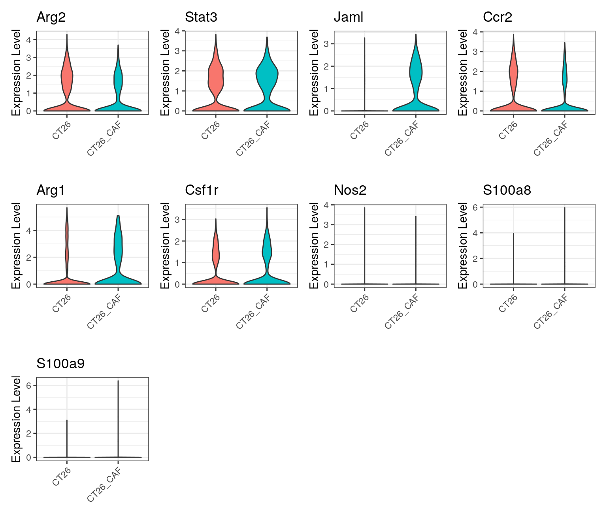
| Version | Author | Date |
|---|---|---|
| 1ad97ad | heinin | 2026-03-31 |
VlnPlot(myel_only,
group.by = "Sample",
features = c("Spp1", "C1qa", "C1qb", "C1qc", "Gas6", "Mfge8",
"Proser1", "Calr", "Cd47", "Cd24a"),
pt.size = 0,
ncol = 4) &
theme_bw() &
NoLegend() &
RotatedAxis() &
xlab("")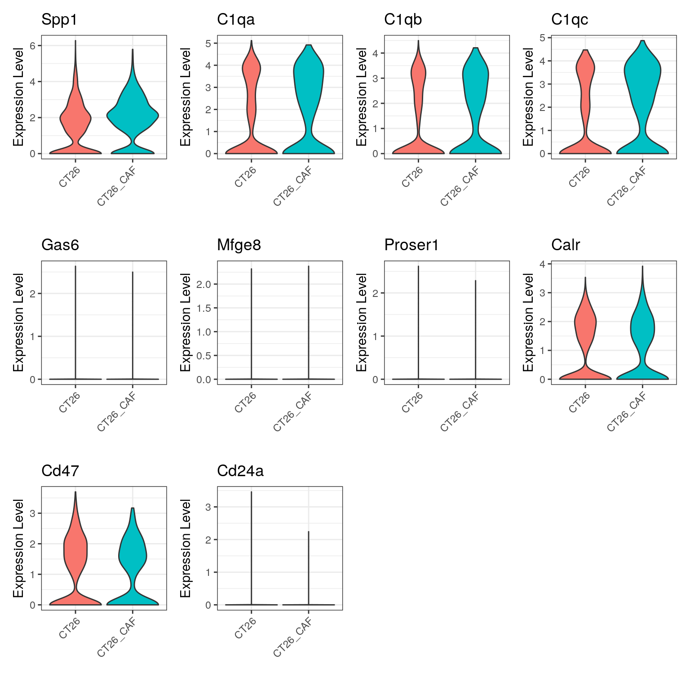
| Version | Author | Date |
|---|---|---|
| 1ad97ad | heinin | 2026-03-31 |
lymph_cts <- unique(grep("Lymph", unique(seurat_data$Annotation), value = T))
lymph_only <- subset(seurat_data, subset = Annotation %in% lymph_cts)
lymphoid <- c("Cd3e", "Cd3g", "Cd247", "Cd4", "Cd8a", "Cd8b1",
"Foxp3", "Cd25", "Il2ra", "Ctla4",
"Ncr1", "NKp46", "Klrb1c", "Cd226",
"Sell", "Ccr7", "Cd44", "Il7r",
"Pdcd1", "Cd274", "Havcr2")
VlnPlot(lymph_only,
group.by = "Sample",
features = lymphoid,
pt.size = 0,
ncol = 4) &
theme_bw() &
NoLegend() &
RotatedAxis() &
xlab("")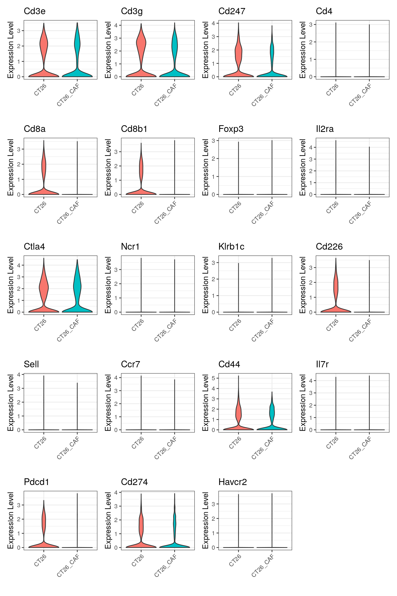
| Version | Author | Date |
|---|---|---|
| 1ad97ad | heinin | 2026-03-31 |
CMS4
# CSM4
csm4_genes <- c("TGFB1", "TGFB2", "TGFB3", "VIM", "CDH2", "FN1", "ACTA2", "MMP2", "MMP3", "MMP9", "SOX10", "FOXC2", "S100A11", "COL1A1", "DSC", "EPCAM", "KRT7", "KRT14", "TJP1")
genenames <- gorth(csm4_genes, source_organism = "hsapiens", target_organism = "mmusculus")
VlnPlot(caf_only,
group.by = "Sample",
features = unique(genenames$ortholog_name),
pt.size = 0,
ncol = 4) &
theme_bw() &
NoLegend() &
RotatedAxis() &
xlab("")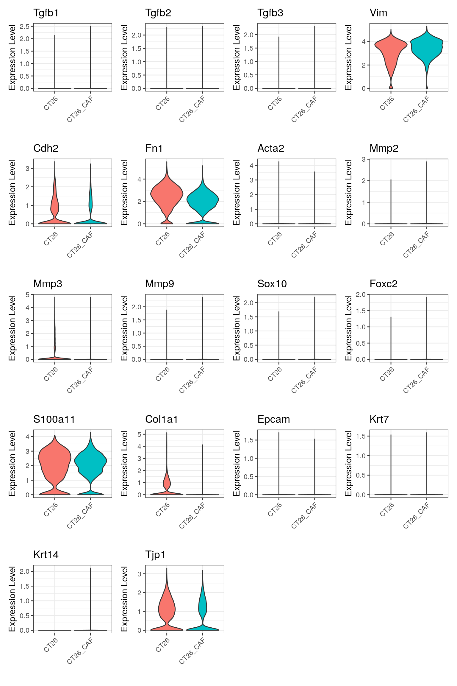
| Version | Author | Date |
|---|---|---|
| 1ad97ad | heinin | 2026-03-31 |
Acta2 = alpha-SMA S100a4 = FAP
#grep("Cd24", rownames(seurat_data), value = T)
stromal_markers <- c("Acta2", "Pdgfra", "Pdgfrb", "Fap", "S100a4", "Tnc",
"Postn", "Cd248", "Pdpn", "Zeb1")
VlnPlot(caf_only,
group.by = "Sample",
features = stromal_markers,
pt.size = 0,
ncol = 4) &
#geom_boxplot() &
theme_bw() &
NoLegend() &
RotatedAxis() &
xlab("")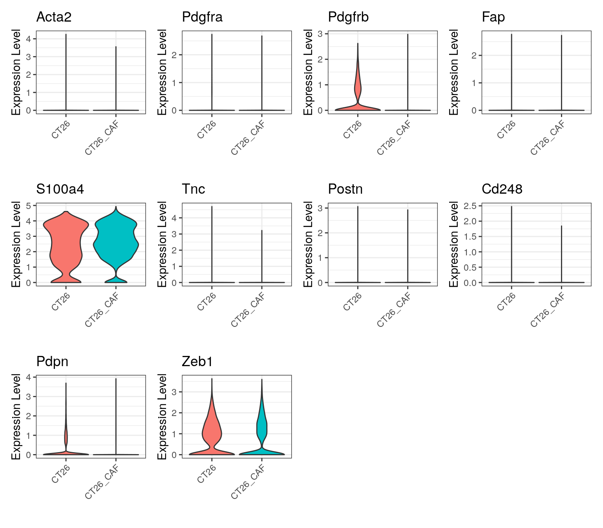
| Version | Author | Date |
|---|---|---|
| 1ad97ad | heinin | 2026-03-31 |
iCAF：Ly6C⁺, Il6, Ccl2, Cxcl1, Cxcl2, Cxcl12, Pdgfra, Agtr1, Cfd,
Il1a, Il1b,
Ccl8, and Ccl27 apCAF： MHC-II⁺ (H2 genes)
myCAF：a-SMA (Acta2), Myl9, Tagln, and Tpm2, COL1A1, COL1A2, and COL3A1,
which are pan-CAF markers but are more highly expressed in myCAFs
relative to iCAFs.
#grep("H2", rownames(seurat_data), value = T)
caf_markers <- c("Ly6C", "Il6", "Ccl2", "Cxcl1", "Cxcl2", "Cxcl12",
"Pdgfra", "Agtr1", "Cfd", "Il1a", "Il1b", "Ccl8",
"Ccl27", "Acta2", "Myl9", "Tagln", "Tpm2", "Col1a1",
"Col1a2", "Col3a1")
caf_markers <- unique(caf_markers)
VlnPlot(caf_only,
group.by = "Sample",
features = caf_markers,
pt.size = 0,
ncol = 4) &
#geom_boxplot() &
theme_bw() &
NoLegend() &
RotatedAxis() &
xlab("")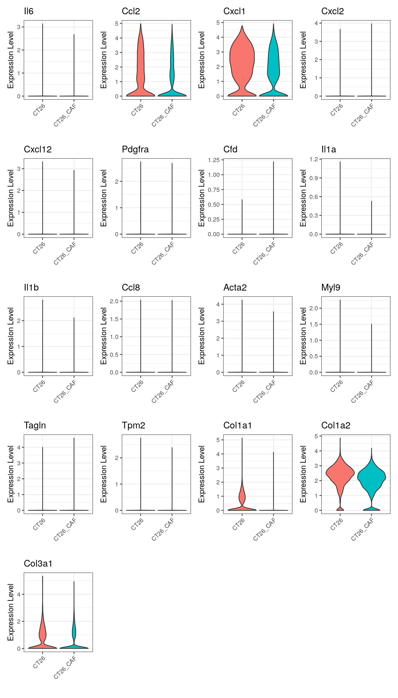
| Version | Author | Date |
|---|---|---|
| 1ad97ad | heinin | 2026-03-31 |
h2_genes <- grep("^H2", rownames(seurat_data), value = T)
VlnPlot(caf_only,
group.by = "Sample",
features = h2_genes,
pt.size = 0,
ncol = 4) &
#geom_boxplot() &
theme_bw() &
NoLegend() &
RotatedAxis() &
xlab("")
| Version | Author | Date |
|---|---|---|
| 1ad97ad | heinin | 2026-03-31 |
#grep("Adg", rownames(seurat_data), value = T)
myel_markers <- c("Gata6", "Timd4", "Lyve1", "Folr2", "Mrc1", "Adgre1",
"Ccr2", "Ly6c2", "S100a8", "Lyz2", "Mertk", "Axl",
"C1qa", "C1qb", "C1qc", "Fcgr1", "Fcgr3", "Itgam", "Sirpa",
"Pdcd1", "Siglec10", "Lilrb1", "Lilrb2", "Spp1", "Trem2",
"Il4", "Mrc1", "Apoe", "Arg1", "Il5", "Ccl3", "Ccl4", "Nos2",
"Fas", "Bsg", "Csf3r", "Fpr1", "Mmp9", "S100a8", "S100a9",
"Il1b")
myel_markers <- unique(myel_markers)
VlnPlot(myel_only,
group.by = "Sample",
features = myel_markers,
pt.size = 0,
ncol = 4) &
#geom_boxplot() &
theme_bw() &
NoLegend() &
RotatedAxis() &
xlab("")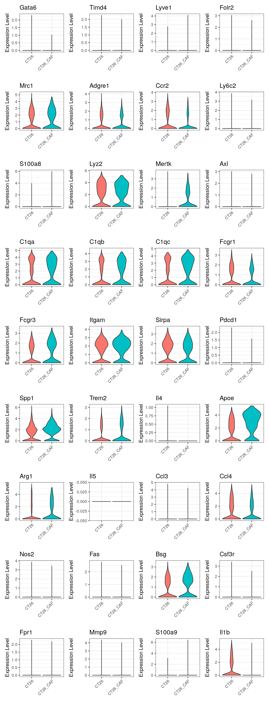
| Version | Author | Date |
|---|---|---|
| 1ad97ad | heinin | 2026-03-31 |
#grep("Ly6C", rownames(seurat_data), value = T)
lymph_markers <- c("Cd4", "Tbx21", "Gata3", "Rorc", "Cd8a", "Cd8b1",
"Gzmb", "Prf1", "Nkg7", "Ifng", "Foxp3", "Il2ra",
"Ctla4", "Pdcd1", "Lag3", "Havcr2", "Tigit.", "Mki67",
"Top2a")
lymph_markers <- unique(lymph_markers)
VlnPlot(lymph_only,
group.by = "Sample",
features = lymph_markers,
pt.size = 0,
ncol = 4) &
#geom_boxplot() &
theme_bw() &
NoLegend() &
RotatedAxis() &
xlab("")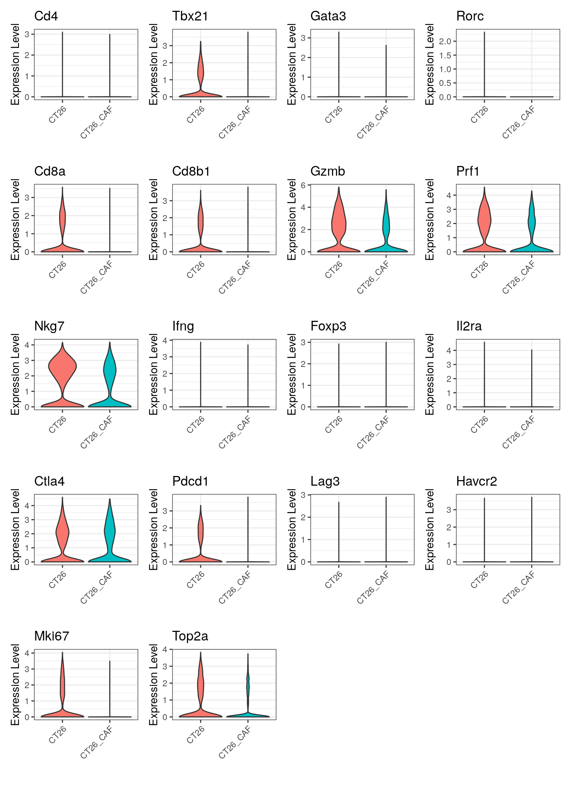
| Version | Author | Date |
|---|---|---|
| 1ad97ad | heinin | 2026-03-31 |
#sort(unique(as.character(seurat_data$Annotation)))
tumor_only <- subset(seurat_data, subset = Annotation %in% grep("Tumor", unique(as.character(seurat_data$Annotation)), value = T))
#grep("Pdl", rownames(seurat_data), value = T)
tumor_markers <- c("Cdh1", "Epcam", "Krt8", "Krt18", "Ocln", "Tjp1",
"Snai1", "Snai2", "Twist1", "Zeb1", "Zeb2", "Cdh2",
"Vim", "Fn1", "Col1a1", "Acta2", "Ki67", "Pcna",
"Mcm2", "Top2a", "Cdk1", "Ccnb1", "Ccna2", "Bax",
"Bak1", "Casp3", "Casp7", "Casp9", "Bcl2", "Mcl1",
"Pmaip1", "Bbc3", "Calr", "Slamf7", "Cd47", "Cd24a",
"Cd274")
tumor_markers <- unique(tumor_markers)
VlnPlot(tumor_only,
group.by = "Sample",
features = tumor_markers,
pt.size = 0,
ncol = 4) &
#geom_boxplot() &
theme_bw() &
NoLegend() &
RotatedAxis() &
xlab("")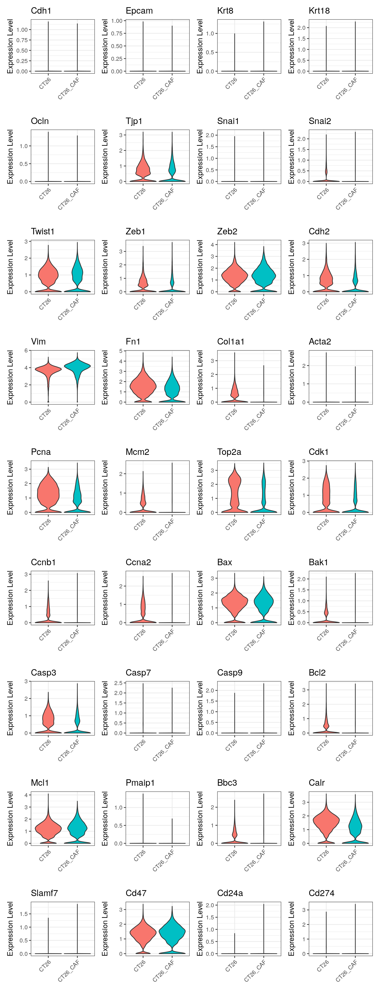
| Version | Author | Date |
|---|---|---|
| 1ad97ad | heinin | 2026-03-31 |
More EMT markers
Epithelial (down in EMT): CDH1 (E-cadherin), TACSTD2 (EPCAM),
CLDN1.
Mesenchymal (up in EMT): VIM (Vimentin ), FN1 (Fibronetin), CDH2
(N-cadherin), ITGA5.
EMT TFs (up): SNAI1, SNAI2, ZEB1, ZEB2, TWIST1.
Invasion/ECM (up): MMP2, MMP9, COL1A1
Cdh1, Epcam, Krt8, Krt18, Ocln , Tjp1 and transcription factors
including Snai1, Snai2, Twist1, Zeb1, Zeb2 up: Cdh2, Vim, Fn1, Col1a1,
Acta2
emt_markers <- c("Cdh1", "Epcam", "Vim", "Fn1", "Cdh2", "Itga5",
"Snai1", "Snai2", "Twist1", "Zeb1", "Zeb2", "Mmp2",
"Mmp9", "Col1a1")
VlnPlot(tumor_only,
group.by = "Sample",
features = emt_markers,
pt.size = 0,
ncol = 4) &
#geom_boxplot() &
theme_bw() &
NoLegend() &
RotatedAxis() &
xlab("")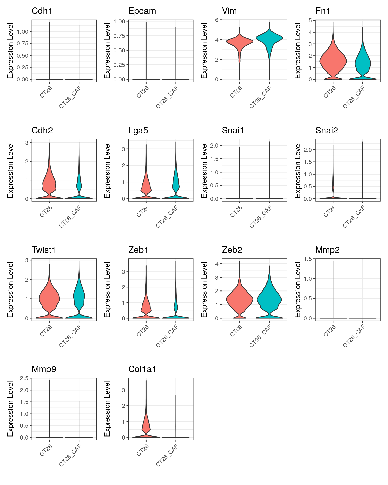
| Version | Author | Date |
|---|---|---|
| 1ad97ad | heinin | 2026-03-31 |
#Rscript -e "rmarkdown::render('PDX_CAF_scRNAseq_comparative_analysis.Rmd')"
sessionInfo()R version 4.3.0 (2023-04-21)
Platform: x86_64-pc-linux-gnu (64-bit)
Running under: Ubuntu 22.04.3 LTS
Matrix products: default
BLAS: /usr/lib/x86_64-linux-gnu/openblas-pthread/libblas.so.3
LAPACK: /usr/lib/x86_64-linux-gnu/openblas-pthread/libopenblasp-r0.3.20.so; LAPACK version 3.10.0
locale:
[1] LC_CTYPE=en_US.UTF-8 LC_NUMERIC=C
[3] LC_TIME=en_US.UTF-8 LC_COLLATE=en_US.UTF-8
[5] LC_MONETARY=en_US.UTF-8 LC_MESSAGES=en_US.UTF-8
[7] LC_PAPER=en_US.UTF-8 LC_NAME=C
[9] LC_ADDRESS=C LC_TELEPHONE=C
[11] LC_MEASUREMENT=en_US.UTF-8 LC_IDENTIFICATION=C
time zone: Etc/UTC
tzcode source: system (glibc)
attached base packages:
[1] grid stats4 stats graphics grDevices utils datasets
[8] methods base
other attached packages:
[1] ComplexHeatmap_2.18.0 viridis_0.6.3
[3] viridisLite_0.4.2 circlize_0.4.15
[5] RColorBrewer_1.1-3 mclust_6.0.0
[7] scCustomize_1.1.1 glmGamPoi_1.14.3
[9] DoubletFinder_2.0.4 scater_1.30.1
[11] scuttle_1.12.0 SingleCellExperiment_1.24.0
[13] SummarizedExperiment_1.32.0 GenomicRanges_1.54.1
[15] GenomeInfoDb_1.38.8 MatrixGenerics_1.14.0
[17] matrixStats_1.0.0 gprofiler2_0.2.1
[19] biomaRt_2.58.2 org.Mm.eg.db_3.18.0
[21] org.Hs.eg.db_3.18.0 AnnotationDbi_1.64.1
[23] IRanges_2.36.0 S4Vectors_0.40.2
[25] Biobase_2.62.0 BiocGenerics_0.48.1
[27] clusterProfiler_4.13.0.004 scProportionTest_0.0.0.9000
[29] SoupX_1.6.2 plyr_1.8.8
[31] lubridate_1.9.2 forcats_1.0.0
[33] stringr_1.5.0 dplyr_1.1.2
[35] purrr_1.0.2 readr_2.1.4
[37] tidyr_1.3.0 tibble_3.2.1
[39] ggplot2_3.4.2 tidyverse_2.0.0
[41] googlesheets4_1.1.0 Seurat_5.0.1
[43] SeuratObject_5.0.2 sp_1.6-1
[45] workflowr_1.7.1
loaded via a namespace (and not attached):
[1] progress_1.2.2 goftest_1.2-3
[3] Biostrings_2.70.3 vctrs_0.6.5
[5] spatstat.random_3.1-5 digest_0.6.31
[7] png_0.1-8 shape_1.4.6
[9] git2r_0.32.0 ggrepel_0.9.3
[11] deldir_1.0-9 parallelly_1.36.0
[13] MASS_7.3-60 reshape2_1.4.4
[15] foreach_1.5.2 httpuv_1.6.11
[17] qvalue_2.36.0 withr_2.5.0
[19] ggrastr_1.0.2 xfun_0.39
[21] ggfun_0.2.0 ellipsis_0.3.2
[23] survival_3.5-5 memoise_2.0.1
[25] ggbeeswarm_0.7.2 janitor_2.2.0
[27] gson_0.1.0 tidytree_0.4.6
[29] zoo_1.8-12 GlobalOptions_0.1.2
[31] pbapply_1.7-0 prettyunits_1.1.1
[33] rematch2_2.1.2 KEGGREST_1.42.0
[35] promises_1.2.0.1 httr_1.4.6
[37] globals_0.16.2 fitdistrplus_1.1-11
[39] ps_1.7.5 rstudioapi_0.14
[41] miniUI_0.1.1.1 generics_0.1.3
[43] DOSE_3.28.2 processx_3.8.1
[45] curl_5.0.1 zlibbioc_1.48.2
[47] ScaledMatrix_1.10.0 ggraph_2.1.0
[49] polyclip_1.10-4 GenomeInfoDbData_1.2.11
[51] SparseArray_1.2.4 doParallel_1.0.17
[53] xtable_1.8-4 evaluate_0.21
[55] S4Arrays_1.2.1 BiocFileCache_2.10.2
[57] hms_1.1.3 irlba_2.3.5.1
[59] colorspace_2.1-0 filelock_1.0.2
[61] ROCR_1.0-11 reticulate_1.30
[63] spatstat.data_3.0-1 snakecase_0.11.0
[65] magrittr_2.0.3 lmtest_0.9-40
[67] later_1.3.1 ggtree_3.10.1
[69] lattice_0.21-8 spatstat.geom_3.2-1
[71] future.apply_1.11.0 getPass_0.2-4
[73] scattermore_1.2 XML_3.99-0.14
[75] shadowtext_0.1.2 cowplot_1.1.1
[77] RcppAnnoy_0.0.20 pillar_1.9.0
[79] nlme_3.1-162 iterators_1.0.14
[81] compiler_4.3.0 beachmat_2.18.1
[83] RSpectra_0.16-1 stringi_1.7.12
[85] tensor_1.5 crayon_1.5.2
[87] abind_1.4-5 gridGraphics_0.5-1
[89] googledrive_2.1.0 graphlayouts_1.0.0
[91] bit_4.0.5 fastmatch_1.1-3
[93] whisker_0.4.1 codetools_0.2-19
[95] BiocSingular_1.18.0 bslib_0.5.0
[97] paletteer_1.5.0 GetoptLong_1.0.5
[99] plotly_4.10.2 mime_0.12
[101] splines_4.3.0 Rcpp_1.0.10
[103] fastDummies_1.7.3 dbplyr_2.3.2
[105] sparseMatrixStats_1.14.0 HDO.db_0.99.1
[107] cellranger_1.1.0 knitr_1.43
[109] blob_1.2.4 utf8_1.2.3
[111] clue_0.3-64 fs_1.6.2
[113] listenv_0.9.0 DelayedMatrixStats_1.24.0
[115] ggplotify_0.1.0 Matrix_1.6-5
[117] statmod_1.5.0 callr_3.7.3
[119] tzdb_0.4.0 tweenr_2.0.2
[121] pkgconfig_2.0.3 tools_4.3.0
[123] cachem_1.0.8 RSQLite_2.3.1
[125] DBI_1.1.3 fastmap_1.1.1
[127] rmarkdown_2.22 scales_1.2.1
[129] ica_1.0-3 sass_0.4.6
[131] patchwork_1.1.2 ggprism_1.0.4
[133] dotCall64_1.0-2 RANN_2.6.1
[135] farver_2.1.1 tidygraph_1.2.3
[137] scatterpie_0.2.1 yaml_2.3.7
[139] cli_3.6.1 leiden_0.4.3
[141] lifecycle_1.0.3 uwot_0.1.14
[143] presto_1.0.0 BiocParallel_1.36.0
[145] rjson_0.2.21 timechange_0.2.0
[147] gtable_0.3.3 ggridges_0.5.4
[149] progressr_0.13.0 limma_3.58.1
[151] parallel_4.3.0 ape_5.7-1
[153] jsonlite_1.8.5 RcppHNSW_0.5.0
[155] bitops_1.0-7 bit64_4.6.0-1
[157] Rtsne_0.16 yulab.utils_0.2.1.002
[159] spatstat.utils_3.0-3 BiocNeighbors_1.20.2
[161] jquerylib_0.1.4 highr_0.10
[163] GOSemSim_2.28.1 lazyeval_0.2.2
[165] shiny_1.7.4 htmltools_0.5.5
[167] enrichplot_1.22.0 GO.db_3.18.0
[169] sctransform_0.4.1 rappdirs_0.3.3
[171] glue_1.6.2 spam_2.9-1
[173] XVector_0.42.0 RCurl_1.98-1.12
[175] rprojroot_2.0.3 treeio_1.26.0
[177] gridExtra_2.3 igraph_1.4.3
[179] R6_2.5.1 labeling_0.4.2
[181] cluster_2.1.4 gargle_1.4.0
[183] aplot_0.2.9 DelayedArray_0.28.0
[185] tidyselect_1.2.0 vipor_0.4.5
[187] ggforce_0.4.1 xml2_1.3.4
[189] future_1.32.0 rsvd_1.0.5
[191] munsell_0.5.0 KernSmooth_2.23-21
[193] data.table_1.14.8 htmlwidgets_1.6.2
[195] fgsea_1.28.0 rlang_1.1.6
[197] spatstat.sparse_3.0-1 spatstat.explore_3.2-1
[199] fansi_1.0.4 beeswarm_0.4.0